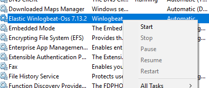

Shipping to Humio
Shipping to Humio
Open command line as an administrator and run the following to start winlogbeat
sc start winlogbeat
Alternatively, run Services app as an administrator and find “Elastic Winlogbeat-oss” service, right click on it, and start it.
